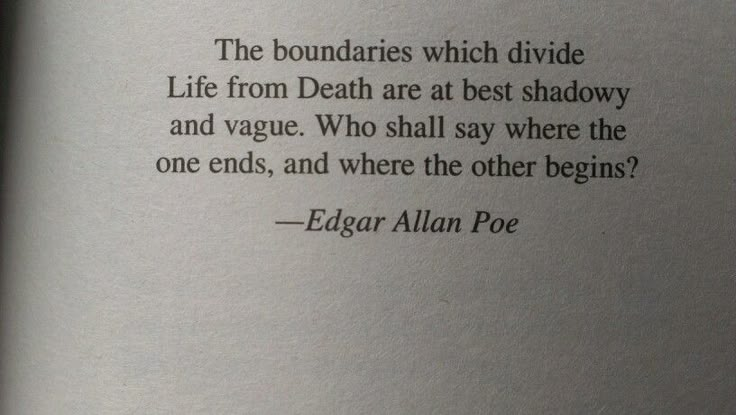

Welcome to Brittle Bones Preservations!
Here at Brittle Bones we transform the finite into the everlasting. Our mission is to honor life through the delicate art of bone taxidermy. We specialize in two deeply personal and meaningful areas:
✦ Pet Memorials: We believe every beloved pet deserves a beautiful and lasting tribute. Working only with ethically sourced and respectfully prepared remains, we create elegant, dignified memorial pieces that preserve the memory and form of your companion for years to come.
✦ Unique Art Pieces: Beyond memorials, we craft one-of-a-kind art installations—from intricate sculptures to statement decor—that celebrate the natural architecture and surprising beauty of the skeletal form.
At Brittle Bones Inc., our work is an act of deep respect for the cycle of life. Every bone is handled with care, cleaned meticulously, and thoughtfully arranged to create a piece of art that is both timeless and deeply personal. We don't just assemble bones; we give them a second life.
Where are we located?
Brittle Bones Preservations is a small, family-inspired business proudly rooted in the quiet, artistic community of Williamsburg, Tennessee. Surrounded by the raw, natural beauty of the foothills, our workshop is a space dedicated to honoring nature's final blueprint: the skeletal form.
While our roots are deeply set here in Tennessee, we are thrilled to serve a broader community. We accept online orders and provide secure, respectful delivery of our custom art and memorials throughout the entire United States.
A little more about us!
Brittle Bones Preservations was founded a decade ago by two lifelong friends, MJ and Jax, who met while both were in art school. The two shared a fascination with classic animal form studies, cultural approaches to memorialization, and Gothic art. They quickly recognized the potential to elevate respectful bone articulation from a scientific process into a meaningful, personalized art form.
Our core belief is that the end of a life is not an ending of beauty.
We are passionate about making respectful and intricate pieces of work to be cherished. some of the ways we do this is by drawing inspiration from historical anatomy museums, Memento Mori art, and global traditions that celebrate ancestors and animal spirits. Every piece is an act of respect. We work only with ethically-sourced materials, dedicating ourselves to the meticulous, dignified cleaning and preservation of remains. For pet memorials, we offer a service that transforms the sadness of loss into a permanent, stunning tribute—preserving the essence of a cherished companion's form.